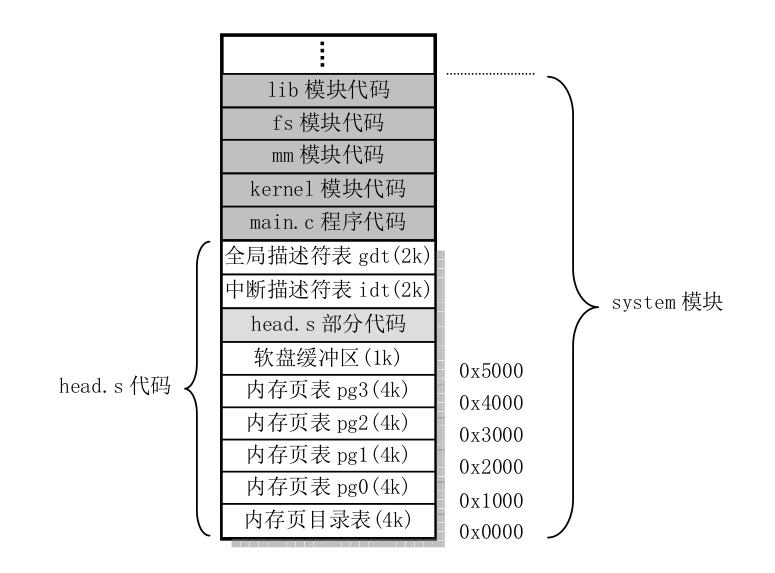

Linux 0.11运行机制
这将是一个漫长的过程，终将解答我心中的疑惑….
step 0: 启动阶段
磁盘引导
PC加电后，BIOS将引导扇区加载到内存0x7C00处(为什么是这个地址?是个业内约定)。
引导扇区:
Boot sector(引导扇区)是所有存储介质上的第一个扇区，大小为512字节。主要分为三个部分，分别是:
* 1. MBR(master boot record,主引导记录) 445字节
* 2. DPT(disk partition table,磁盘分区表) 64字节
* 3. BRID(boot record ID 引导记录标示) 2字节
#### MBR
主引导记录的作用是安装基本的引导加载程序(boot loader),在Linux中是grub。grub的主要功能是：
* 1. 提供菜单：用户可以选择不同的开机选项，这是多重引导的虫咬功能。
* 2. 载入内核文件: 直接指向可开机的程序区段来开始操作系统
* 3. 转交其它Loader: 将引导加载功能交给其它loader处理
bootsect.s 是第一个被CPU执行的程序，这个程序先把自己从移动到0x90000处，接在吧磁盘中的setup.s弄到内存里来（具体的位置是0x920000)，然后把system模块移动到0x10000处，跳转到setup程序，setup.s程序又将system模块移动到内存起始地址。
bootsect.s,setup.s 为什么要移来移去的？
我们的目标是要将操作系统放到内存里去，最好的位置就是内存起始地址(0x0000)，但是在刚开始的时候，BIOS在那个内存起始处保存了中断向量和终端服务程序，所以在仍然需要用到BIOS功能之前我们不能直接将系统移动到那个地方去。
为什么是0x900000?
那时候system模块挺小的，0x0000000 ---- 0x900000 足够放置system模块代码。
为什么是0x10000？
BIOS相关的的东西在 0x000000 --- 0x10000中。
gdt,ldt,rdt表
setup.s 做了一系列的操作中，最重要的当然是这三个表的初始化，设置好代码段、数据段后程序就可以跑起来了,具体的细节涉及到”X86保护模式以及编程”。setup.s调用head.s代码，执行完后内存映像如下：  注：页表、描述符表等的初始化在head.s代码中
内核初始化main.c程序
trap_init()
Linux0.11 用过门描述符在idt表中放置了各种异常处理函数(具体操作是traps.c:trap_inti())，包括：除0，段错误等。当异常发生的时候，根据idt表中的段选择符找到中断处理函数，执行相应的处理回调，以除0为例：
#首先进入中断处理(涉及各类寄存器的处理，具体原理要看"X86保护模式及其编程")，执行asm.s中的"divide_error":
divide_error:
pushl $do_divide_error # 接下来被调用
no_error_code:
xchgl %eax,(%esp) #寄存器处理
pushl %ebx
pushl %ecx
pushl %edx
...
...
iret #返回后，CS:EIP 可能已经被改变
void do_divide_error(long esp, long error_code)
{
die("divide error",esp,error_code);
}
static void die(char * str,long esp_ptr,long nr)
{
long * esp = (long *) esp_ptr;
int i;
printk("%s: %04x\n\r",str,nr&0xffff);
printk("EIP:\t%04x:%p\nEFLAGS:\t%p\nESP:\t%04x:%p\n",
esp[1],esp[0],esp[2],esp[4],esp[3]);
printk("fs: %04x\n",_fs());
printk("base: %p, limit: %p\n",get_base(current->ldt[1]),get_limit(0x17));
if (esp[4] == 0x17) {
printk("Stack: ");
for (i=0;i<4;i++)
printk("%p ",get_seg_long(0x17,i+(long *)esp[3]));
printk("\n");
}
str(i);
printk("Pid: %d, process nr: %d\n\r",current->pid,0xffff & i);
for(i=0;i<10;i++)
printk("%02x ",0xff & get_seg_byte(esp[1],(i+(char *)esp[0])));
printk("\n\r");
do_exit(11); /* play segment exception */
}
可见默认的处理就是”打印出错地址，杀死当前进程”，然后重新调度起另一个进程(do_exit()中)。
system_call
系统调用是使用0x80中断，具体的原理是:在idt表中的第0x80(124)个索引中存放了一个DPL=3的陷进门(sched_init函数中)，所以用户态代码可以以特权级别3（DPL<=MIN(CPL,RPL))来访问这个陷进门。
set_system_gate(0x80,&system_call);
//dpl = 3 , 所以用户态代码可以通过这个门进入内核
//type = 15 陷阱门
#define set_system_gate(n,addr) \
_set_gate(&idt[n],15,3,addr)
在system_call中根据系统调用号来决定调用哪一个系统调用函数，每个系统调用函数都存放在一个函数指针数组：sys_call_table中。
system_call:
cmpl $nr_system_calls-1,%eax
ja bad_sys_call
push %ds
push %es
push %fs
pushl %edx
pushl %ecx # push %ebx,%ecx,%edx as parameters
pushl %ebx # to the system call
movl $0x10,%edx # set up ds,es to kernel space
mov %dx,%ds
mov %dx,%es
movl $0x17,%edx # fs points to local data space
mov %dx,%fs
call sys_call_table(,%eax,4) #执行具体的系统调用
pushl %eax
movl current,%eax
cmpl $0,state(%eax) # state
jne reschedule
cmpl $0,counter(%eax) # counter
je reschedule # 重新调度
ret_from_system_call: # 在这里处理了"信号处理句柄"
...
...
iret # 可见，先处理信号（如果有的话），在执行用户程序